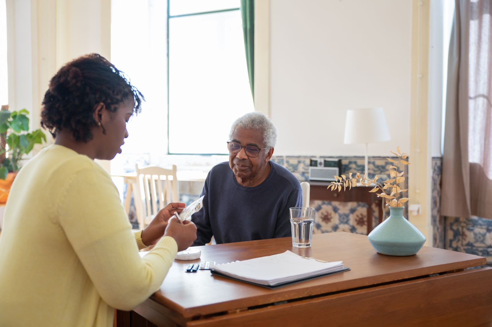

Settling back home
Friendly support to make the first days at home feel calmer and more organised.
Hospital discharge support
Coming home from hospital can feel like a big step. Badwi Care & Companionship provides calm, friendly support with everyday tasks, confidence and family reassurance.
We can help someone settle in, prepare simple food, tidy the home, organise light shopping, provide companionship and check how they are feeling.
Support can also include appointment support, confidence building, reducing loneliness after discharge and keeping family members informed.

What we can help with
Friendly support to make the first days at home feel calmer and more organised.
Preparing light meals, snacks and drinks so normal routines feel easier.
Tidying, dishes and simple household tasks to keep the home comfortable.
Helping with shopping lists, groceries and everyday essentials.
Conversation, reassurance and friendly company to reduce loneliness.
Checking someone is comfortable, connected and coping with daily routines.
Support getting to follow-up appointments or community activities.
Helpful communication so relatives know how things are going.
Gentle encouragement to rebuild routines and feel more settled.
Badwi Care & Companionship does not currently provide regulated personal care, nursing care or clinical care. Where personal care or clinical support is required, families should contact an appropriate registered provider or healthcare professional.
Talk to Badwi Care & Companionship about practical support after coming home.